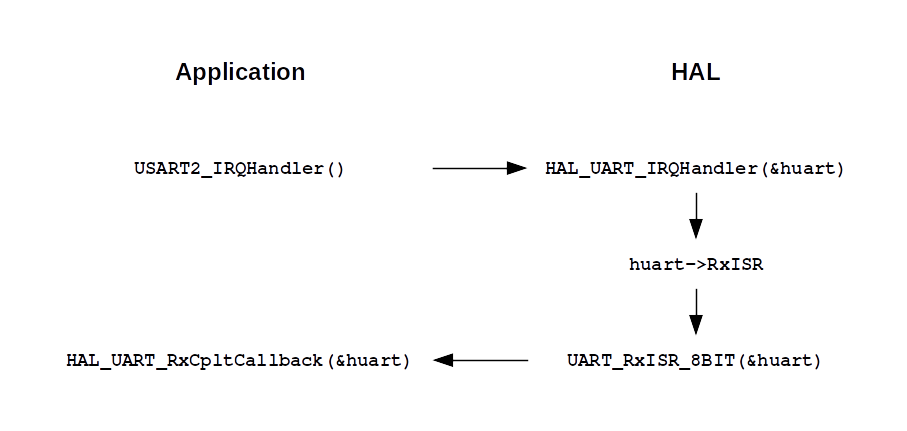

Bare metal software development for STM32
Pascal Bodin
Document history
| When | What |
|---|---|
| 04-May-2022 | Serial example |
| 24-Apr-2022 | First version |
This work is licensed under a Creative Commons Attribution-NonCommercial-ShareAlike 4.0 International License
Credits
- reveal.js - Copyright (C) 2020 Hakim El Hattab
Target: NUCLEO-L476RG
Board characteristics
- STM32L476RGT6U microcontroller
- Integrated ST-LINK debugger/programmer
- One user LED
- One user pushbutton, one reset pushbutton
- Arduino Uno V3 expansion connector
- Around 13 €
Microcontroller characteristics
- Arm Cortex-M4 core - frequency up to 80 MHz
- Floating Point Unit
- DSP instructions
- Memory Protection Unit
- 1 MB Flash memory
- 128 KB RAM
- many interfaces
Hardware documentation
- Board schematics ⇒ how to control external peripherals
- Microcontroller datasheet ⇒ microcontroller characteristics - 270 pages
- Microcontroller reference manual ⇒ complete information on how to use the microcontroller - 1906 pages
- Cortex-M4 programming manual ⇒ generic information for software development - 262 pages
- Many Application Notes ⇒ "How to..."
Software documentation
- Getting started with STM32CubeL4 ⇒ overview of software development environment - 31 pages
- Description of STM32L4/L4+ HAL and low-layer drivers - 2604 pages
- STM32CubeIDE user guide - 246 pages
- etc.
Schematics: user button
Schematics: user LED
Datasheet: RAM
Reference manual: memory map

Reference manual: GPIO
Reference manual: timer

Timer interrupt to CPU
Reference manual: TIM3 timer
TIM3 on APB1
APB1 clock
Configurable clock, max 80 MHz
Software components
Software architecture
STM32CubeIDE
Create a new project and configure
- Create a new STM32 project, named
blinky - With the board selector, select NUCLEO-L476RG
- Configure (IOC file):
- Pinout & Configuration > System Core > SYS: set Debug to Trace Asynchronous Sw
- Look at Clock Configuration: HCLK is set to 80 MHz
- Pinout & Configuration > Timers > TIM3:
- Set Clock Source to Internal Clock
- Set Parameter Settings > Counter Settings > Prescaler to
800 -
Set Parameter Settings > Counter Settings > Counter Period to
10000 - Set Parameter Settings > Counter Settings > auto-reload preload to Enable
- Set NVIC Settings > TIM3 global interrupt to Enabled
- Generate code by saving (CTRL-S)
TIM3 counter frequency
HCLK to APB1 Timer clocks: 80 MHz
Timer prescaler: 800 ⇒ counter frequency = 100 kHz (80 MHz / 800)
Counter period: 10000 ⇒ interrupt every 100 ms (1 / (100 kHz / 10000))
Add glue code
- Add call to
HAL_TIM_Base_Start_IT - Define
HAL_TIM_PeriodElapsedCallback - Make it toggle LED2
- Use
HAL_UART_Transmitto display program version
Repository
Resulting code is in STM32 code examples repository (blinky).
Build, run
- To build: right-click on project name, Build Project
- To run:
- Run > Run Configurations...
- Create a new launch configuration
- Click the Run button
- Use a terminal program on the development machine. For linux:
- Install python3-serial
- Run
miniterm <device> 115200 - (
<device>is something like/dev/ttyACM0)
- Click the black button on the board: miniterm should display the version string
Debug
- Run > Debug Configurations...
- Use the configuration defined for run
- Click the Debug button
- The application stops at the first statement in
main - The code can be run step by step, entering or not every function
- Variables can be inspected
- Etc.
SWV
Check this page to discover what SWV is and how to use it.
How does the application start?
First, let's see what stack and vector table are.
Stack
Memory area used to store temporary data used by the application: function arguments and local variables.
The stack grows and shrinks depending on memory needs.
Vector table
Usual definition: data structure associating a list of interrupt handlers to the list of interrupts:
| Interrupt | Handler |
|---|---|
| INT 0 | INT0_handler |
| INT 1 | INT1_handler |
| ... | ... |
For a Cortex-M4 core
Generalization:
An exception is a condition that changes the normal flow of control in a program.
Exceptions
- Reset
- NMI
- Hard fault
- Memory management fault
- Bus fault
- Usage fault
- SVCall
- PendSV
- SysTick
- Interrupt (IRQ)
Exception handlers
- Interrupt Services Routines (ISRs)
- Fault handlers
- System handlers
Vector table
Question: where is located the vector table?
Answer: at the bottom of memory
Question: how to define the vector table?
Answer: in a specific source code file, the startup file. Usually, in assembly language.
In our example: Core/Startup/startup_stm32l476rgtx.s
g_pfnVectors:
.word _estack
.word Reset_Handler
.word NMI_Handler
.word HardFault_Handler
.word MemManage_Handler
.word BusFault_Handler
.word UsageFault_Handler
.word 0
.word 0
.word 0
.word 0
.word SVC_Handler
...
First element: initial stack pointer value, set to _estack.
This is the address of the top of the stack.
For a Cortex-M, the stack is descending: a new element is added at a lower address.
_estack is defined in the linker script.
The linker script describes the memory layout of the executable file.
In our example: STM32L476RGTX_FLASH.ld.
/* Entry Point */
ENTRY(Reset_Handler)
/* Highest address of the user mode stack */
_estack = ORIGIN(RAM) + LENGTH(RAM); /* end of "RAM" Ram type memory */
_Min_Heap_Size = 0x200 ; /* required amount of heap */
_Min_Stack_Size = 0x400 ; /* required amount of stack */
/* Memories definition */
MEMORY
{
RAM (xrw) : ORIGIN = 0x20000000, LENGTH = 96K
RAM2 (xrw) : ORIGIN = 0x10000000, LENGTH = 32K
FLASH (rx) : ORIGIN = 0x8000000, LENGTH = 1024K
}
Three memory regions (there are two RAM blocks in the STM32L476RG).
In the startup file, the vector table is defined in the isr_vector section:
.section .isr_vector,"a",%progbits
.type g_pfnVectors, %object
.size g_pfnVectors, .-g_pfnVectors
g_pfnVectors:
.word _estack
.word Reset_Handler
.word NMI_Handler
In the linker script, the isr_vector region is assigned to the FLASH
memory region:
/* Sections */
SECTIONS
{
/* The startup code into "FLASH" Rom type memory */
.isr_vector :
{
. = ALIGN(4);
KEEP(*(.isr_vector)) /* Startup code */
. = ALIGN(4);
} >FLASH
...
More generally:
- Every object file contains several sections
- All sections are grouped and assigned to memory regions depending on their type
- Common sections:
text: code ⇒ Flashrodata: read-only data ⇒ Flashdata: read-write initialized data ⇒ RAMbss: uninitialized data ⇒ RAM
(bss comes from Block Started by Symbol, a term used by an assembler in the mid-50s)
Startup file code
Code = reset handler.
Starts by initializing microcontroller's stack pointer (required by first function call).
.section .text.Reset_Handler
.weak Reset_Handler
.type Reset_Handler, %function
Reset_Handler:
ldr sp, =_estack /* Set stack pointer */
Then, system and data initialization.
/* Call the clock system initialization function.*/
bl SystemInit
/* Copy the data segment initializers from flash to SRAM */
ldr r0, =_sdata
ldr r1, =_edata
ldr r2, =_sidata
movs r3, #0
b LoopCopyDataInit
CopyDataInit:
ldr r4, [r2, r3]
str r4, [r0, r3]
adds r3, r3, #4
LoopCopyDataInit:
adds r4, r0, r3
cmp r4, r1
bcc CopyDataInit
/* Zero fill the bss segment. */
ldr r2, =_sbss
ldr r4, =_ebss
movs r3, #0
b LoopFillZerobss
FillZerobss:
str r3, [r2]
adds r2, r2, #4
LoopFillZerobss:
cmp r2, r4
bcc FillZerobss
/* Call static constructors */
bl __libc_init_array
Then, calls main.
/* Call the application's entry point.*/
bl main
LoopForever:
b LoopForever
bl: branch with link - the target code may return to the next address (this is a function call).
b: branch
Question: what happens if main returns?
Answer: the microcontroller enters an infinite loop:
bl main
LoopForever:
b LoopForever
Last step: flashing the microcontroller
The executable file must be written into microcontroller Flash. Three ways:
- serial interface (UART, SPI, I2C...) + boot loader
- JTAG - the generic tool for flashing, debugging and testing
- SWD - the Arm alternative to JTAG
The ST-LINK interface of the NUCLEO-L476RG board uses SWD.
JTAG: Joint Test Action Group
UART example
In addition to blinky example: configures UART2 for interrupt-driven RX.
Every received character is echoed back.
The source code is in
this repository, in serial project.
Interrupt enabling
In Core/Src/main.c/MX_USART2_UART_Init():
HAL_UART_Receive_IT(&huart2, &rec_byte, 1);
Interrupt wiring
In Core/Src/stm32l4xx_hal_msp.c/HAL_UART_MspInit():
HAL_NVIC_SetPriority(USART2_IRQn, 0, 1);
HAL_NVIC_EnableIRQ(USART2_IRQn);
ISR
In Core/Src/main.c/HAL_UART_RxCpltCallback()
void HAL_UART_RxCpltCallback(UART_HandleTypeDef *huart)
{
rec_byte_event = true;
}
The received byte is stored in rec_byte, passed to initialization function.
Question
The UART2 interrupt vector is USART2_IRQHandler. So, how HAL_UART_RxCpltCallback()
is called?
In startup file, USART2_IRQHandler is defined in the following way:
.weak USART2_IRQHandler
.thumb_set USART2_IRQHandler,Default_Handler
This means:
USART2_IRQHandleris set toDefault_Handler(an infinite loop).weakmeans: if the application provides another definition (implementation) ofUSART2_IRQHandler, then this definition will replace the original one.
So, let's add our implementation, to Core/Src/stm32l4xx_it.c:
void USART2_IRQHandler(void)
{
HAL_UART_IRQHandler(&huart2);
}
But what is HAL_UART_IRQHandler()?!
It's the generic HAL function used to process UART interrupts.
It is defined in Drivers/STM32L4xx_HAL_Driver/Src/stm32l4xx_hal_uart.c.
If no error, it calls the function stored in huart->RxISR,
which is UART_RxISR_8BIT()
If everything is still OK, this function calls HAL_UART_RxCpltCallback(huart).
And that's it!
Summary
The RX interrupt is disabled by default by the HAL's ISR code.
Consequently, it has to be reenabled by the applications's ISR code:
void HAL_UART_RxCpltCallback(UART_HandleTypeDef *huart)
{
HAL_UART_Receive_IT(&huart2, &rec_byte, 1);
rec_byte_event = true;
}
What if the background task is too busy from time to time?
If a new character is received while the previous one has not been processed, the previous one is lost.
To prevent this: let's use a circular buffer
The source code is in this repository, in serial-buffer project.
Core/Src/buffer.c implements the buffer.
static uint16_t inIndex;
static uint16_t outIndex;
static uint16_t dataLength;
static uint8_t ringBuffer[BUFFER_LENGTH];
void initBuffer(void) {
inIndex = 0;
outIndex = 0;
dataLength = 0;
}
void putData(uint8_t data) {
ringBuffer[inIndex] = data;
// Move inIndex forward.
inIndex++;
if (inIndex == BUFFER_LENGTH) {
inIndex = 0;
}
dataLength++;
if (dataLength == BUFFER_LENGTH + 1) {
// Overflow. Move outIndex forward.
outIndex++;
if (outIndex == BUFFER_LENGTH) {
outIndex = 0;
}
dataLength--;
}
}
int getData(void) {
if (dataLength == 0) {
return BUFFER_EMPTY;
}
uint8_t dataToReturn = ringBuffer[outIndex];
dataLength--;
// Move outIndex forward.
outIndex++;
if (outIndex == BUFFER_LENGTH) {
outIndex = 0;
}
return dataToReturn;
}
void HAL_UART_RxCpltCallback(UART_HandleTypeDef *huart)
{
putData(rec_byte);
HAL_UART_Receive_IT(&huart2, &rec_byte, 1);
rec_byte_event = true;
}
while (true)
{
if (rec_byte_event)
{
rec_byte_event = false;
while (true)
{
received_byte = getData();
if (received_byte != BUFFER_EMPTY)
{
HAL_UART_Transmit(&huart2, (uint8_t *)&received_byte, 1, TRANSMIT_TIMEOUT);
}
else
{
break;
}
}
}
}
We still have a problem: if a byte is received while the background task is updating the circular buffer pointers and data length, the ISR may introduce inconsistencies.
How dataLength is decremented:
80005a0: 4b0c ldr r3, [pc, #48] ; (80005d4 )
80005a2: 881b ldrh r3, [r3, #0]
80005a4: 3b01 subs r3, #1
80005a6: b29a uxth r2, r3
80005a8: 4b0a ldr r3, [pc, #40] ; (80005d4 )
80005aa: 801a strh r2, [r3, #0]
Instructions executed by the microcontroller to execute the dataLength-- statement.
getData()is called. It gets a byte from the buffer, and reads the value ofdataLengthfrom memory in order to decrement itputData()is called. As it is called from the ISR, it stops execution ofgetData(). It adds a byte to the buffer and incrementsdataLength- When
getData()is given back control, it goes on, incrementing its value ofdataLengthand writing it back to memory. But the value that was incremented was not the right one - Result:
dataLengthis one less than its real value
Solution: make atomic all modifications to the circular buffer.
One way to do this: inhibit UART interruptions in getData
int getData(void) {
HAL_NVIC_DisableIRQ(USART2_IRQn);
if (dataLength == 0) {
HAL_NVIC_EnableIRQ(USART2_IRQn);
return BUFFER_EMPTY;
}
uint8_t dataToReturn = ringBuffer[outIndex];
dataLength--;
// Move outIndex forward.
outIndex++;
if (outIndex == BUFFER_LENGTH) {
outIndex = 0;
}
HAL_NVIC_EnableIRQ(USART2_IRQn);
return dataToReturn;
}
While getData is being executed, no UART interrupt will reach the processor.
If a byte is received while UART interrupts are inhibited:
- The interrupt signal is kept asserted by the UART peripheral
- The NVIC will forward it to the processor as soon as
HAL_NVIC_EnableIRQis called
Note: only UART interrupts are inhibited.
The source code is in this repository, in serial-buffer-atomic project.